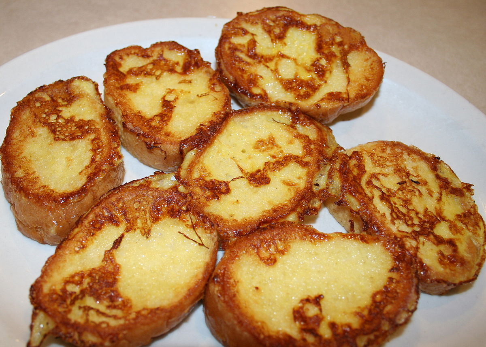

French Toast

Description
Humerous text about french toast.
Ingredients
- 2/3 Cup Milk
- 2 Large Eggs
- 1 teaspoon vanilla extract (Optional)
- 1/4 teaspoon ground cinnamon (Optional)
- Salt to taste
- 6 thick slices bread
- 1 tablespoon unsalted butter, or more as needed
Directions
- Whisk milk, eggs, vanilla, cinnamon, and salt together in a shallow bowl.
- Lightly butter a griddle and heat over medium-high heat.
- Dunk bread in the egg mixture, soaking both sides. Transfer to the hot skillet and cook until golden, 3 to 4 minutes per side. Serve hot.
French Onion Soup
Homepage